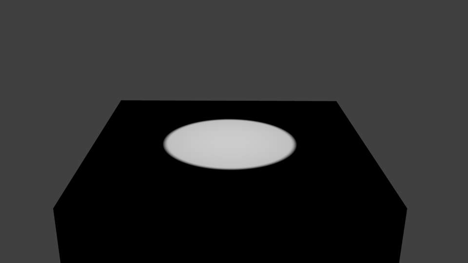
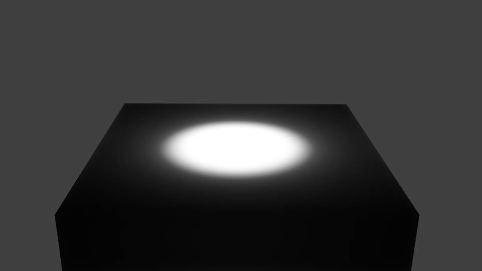
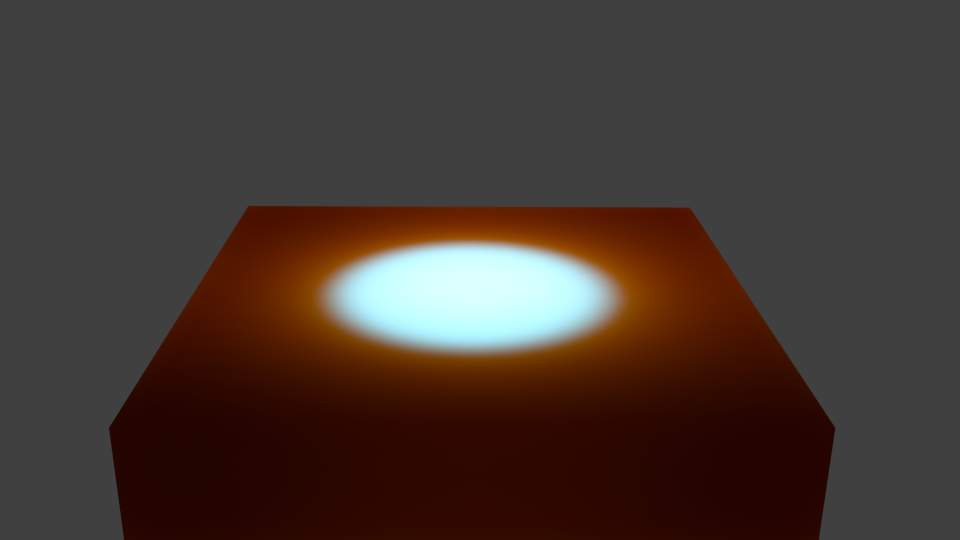

Subsurface Scattering¶
Many organic and inorganic materials are not totally opaque right at the surface, so light does not just bounce off the top surface. Instead, some light also penetrates the skin surface deeply, and scatters around inside, taking on the color of the insides and emerging back out at a different location. Human/animal skin, the skin of grapes, tomatoes, fruits, wax, gels (like honey, or Jello) and so on all have subsurface scattering (SSS), and photo-realism really cannot be achieved without it.
It is important to understand that subsurface scattering and diffuse are one and the same. The difference is in how far light can diffuse beneath the surface before it is absorbed or transmitted back out.
How it works¶
Actually calculating the light path beneath the surface of an object is not practical. But it has been shown that it is not necessary to do this, and that one can use a different approach.
Blender calculates SSS in two steps:
- At first the irradiance, or brightness, of the surface is calculated, from the front side of the object as well as from its back side. This is pretty much the same as in a normal render. Ambient Occlusion, Radiosity, the type of diffuse Shader, the light color, etc. are taken into account.
- In the second step, the final image is rendered, but now the SSS shader replaces the diffuse shader. Instead of the lamps, the calculated lightmap is used. The brightness of a surface point is the calculated “Average” of the brightness of its surrounding points. Depending on your settings the whole surface may be taken into account, and it’s a bit more complicated than simply calculating the average, but do not bother too much with the math behind it.
Instead let us see what SSS does to a distinct light point.

No SSS. |
|

SSS radius enlarged. |

SSS with very large red radius value. |
{kind=link}
{kind=link}
{kind=link}
{kind=link}
If you turn on SSS, the light is distributed over a larger area. The size of this area depends on the radius values. Instead of distributing all colors with the same amount, you may choose different radius values for each of the RGB colors.
If you use a very large radius value for a color, its light is evenly distributed over the whole object.
Note
Note about scatter radius
Because of the way this scattering is calculated, when using large radius values, you will notice fringing artifacts that appear as the complementary color to the predominant color of the scattering. Above, you see in the last image a bluish band in the illuminated area. This is an unfortunate limitation. A way to lessen this effect is use multiple passes with different scatter radii, and average them.
Enabling Subsurface Scattering¶
The SSS Panel. SSS is already enabled.
- Enable SSS by clicking on the Subsurface Scattering button.
- Accessible at the top are various presets. Add new or remove old presets by clicking the + and - buttons. When you select a preset, the Radius values, the RGB Radius and the IOR are set for you. The remaining options are not set (because they are mostly dependent on the size of your object).
SubSurface Scattering doesn’t need ray tracing. But since it is dependent on the incident light and shadows, you need proper shadow calculation (which may need ray tracing).
Options¶
The numeric sliders control how the light is scattered:
- IOR
- The Index Of Refraction value determines the falloff of incident light. Higher values means that light falls off faster. The effect is quite subtle and changes the distribution function only a little bit. By the examination of many different materials, values of (1.3 to 1.5) have been found to work well for most materials. If you know the exact material you are trying to simulate, see IOR values for Common Materials.
- Scale
- The scale of your object, in Blender units, across which you want the scattering effect to take place. Scale of 1.0 means 1 Blender unit equals 1 millimeter, scale of 0.001 means 1 Blender unit equals 1 meter. If you want to work out what scale value to use in your scene, just use the formula: (size in Blender units)/(real world size in millimeters)=scale.
- Scattering Color (Albedo)
Albedo is the probability that light will survive a scattering event. If you think of scattering as a filter, this is the height of the filter. It is multiplied by the surface color. In practice, this is unintuitive. It should be the same as the surface color, however, changing this value has unintuitive results on the scattering effect:
The darker the color the more light is scattered. A value of 1 will produce no scattering effect.
So if you set it to green, the lit areas of the object will appear as green, and green is scattered only a little. Therefore the darker areas will appear in red and blue. You can compensate the different scattering by setting a larger radius for the color.
- RGB Radius
- This is not in fact the radius of the subsurface scattering, but the average path length between scattering events. As the light travels through the object it bounces around then emerges from the surface at some other point. This value corresponds to the average length the light travels between each bounce. The longer the path length is, the further the light is allowed to scatter. This is the main source of a material’s perceived “scatter color.” A material like skin will have a higher red radius than green and blue. Subsurface scattering is the diffusion of light beneath the surface. You control how far the light spreads to achieve a specific result.
- Blend
- Color
- This controls how much the RGB option modulates the diffuse color and textures. Note that even with this option set to 0.0, the RGB option still influences the scattering behavior.
- Texture
- How much the surface texture is blurred along with the shading.
- Scattering Weight
- Front
- Factor to increase or decrease the front scattering. When light enters through the front of the object, how much is absorbed or added? (Normally 1.0 or 100%).
- Back
- Factor to increase or decrease the back scattering. Light hitting an object from behind can go all the way through the object and come out on the front of the object. This happens mostly on thin objects, like hands and ears.
- Error
This parameter controls how precisely the algorithm samples the surrounding points. Leaving it at 0.05 should give images without artifacts. It can be set higher to speed up rendering, potentially with errors.
Setting it at 1.0 is a good way to quickly get a preview of the look, with errors.
Developing your own SSS material¶
The Traditional Approach¶
A more common but less intuitive approach is to use “layering”. This is a simplified version of the layering approach. See the external links for more information:
- Set the SSS color on a value of your choice, normally the predominant color of the object. If you want to use different radii for the colors, do not make it too dark.
- Set the scale factor. If you want to see much translucency you need small objects or large scale values.
- Set the radius values.
- Adjust the brightness with the Front and Back values.
A more intuitive approach¶
- Set the Scattering color to 0.5
- Set the Front weight to 2.0
- Set the scale factor based on the size of your object relative to the scene. If you want to see much translucency you need small objects or large scale values.
- Set the radius values appropriately.
{kind=link}
{kind=link}
{kind=link}
{kind=link}
{kind=link}